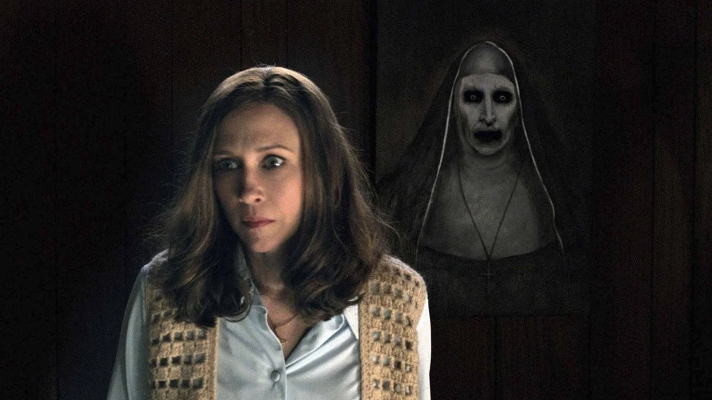

👁️ Démonok között
A játék alapját a valós paranormális nyomozók, Ed és Lorraine Warren történetei ihlették. A Black Core Games fejlesztői több mint 200 órányi interjút és történelmi dokumentumot dolgoztak fel, hogy a démoni megszállások leghitelesebb élményét nyújtsák.
A játékban minden szoba véletlenszerűen változik, így nincs két ugyanolyan rémálom — a félelem mindig újra megszületik.